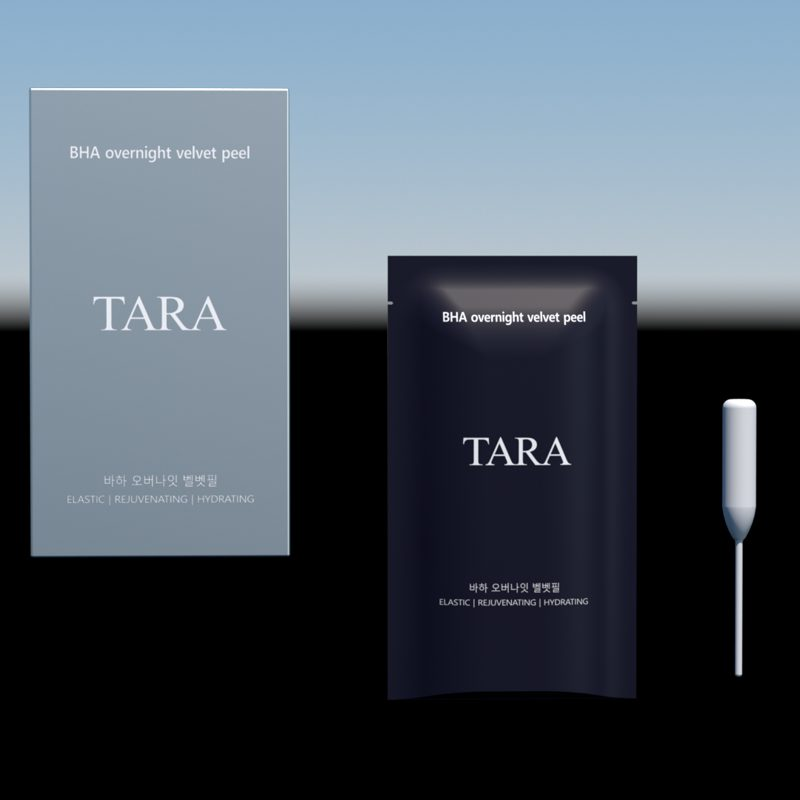

Guide
How to use BHA peel pads at night
Pre-soaked peel pads are the easiest way to add an exfoliating acid to your routine: one pad, one wipe, no measuring. Here's how to use them without overdoing it.

What BHA and AHA do
BHA (beta hydroxy acid) is oil-soluble, so it works well on pores and on skin that looks rough or congested. AHA (alpha hydroxy acid) works on the surface, lifting dull buildup so skin looks smoother and brighter. Peel pads that combine both work on texture and dullness at the same time.
Step by step
- Cleanse and pat dry. Use the pad on dry skin, not damp.
- One pad, one sweep. Wipe it evenly across the face, avoiding the eye area and lips.
- Leave it on. Don't rinse.
- Moisturize. Follow with lotion and cream.
- Sunscreen the next morning. Acids can make skin more sensitive to the sun.
How often?
Start with two nights a week. If your skin is happy, go up to three. Skip it on nights you use a sheet mask or other exfoliants, and stop if your skin feels irritated.
Our peel pads
The TARA BHA Overnight Velvet Peel has BHA at 5,000 ppm plus AHA, buffered with marine collagen, hyaluronic acid and seawater so skin is left looking replenished rather than tight. Twelve 100% cotton pads, 5 ml each. Featured in Allure Korea.